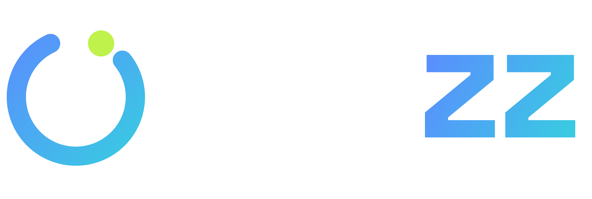
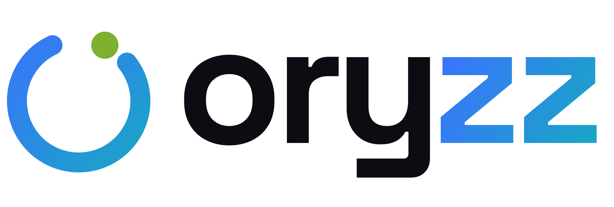
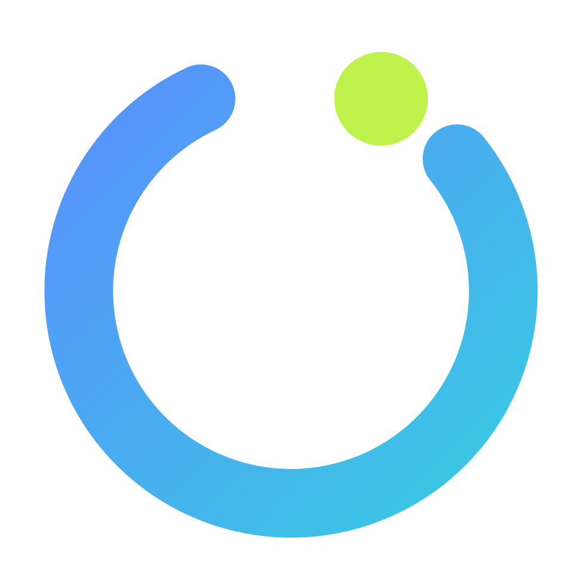
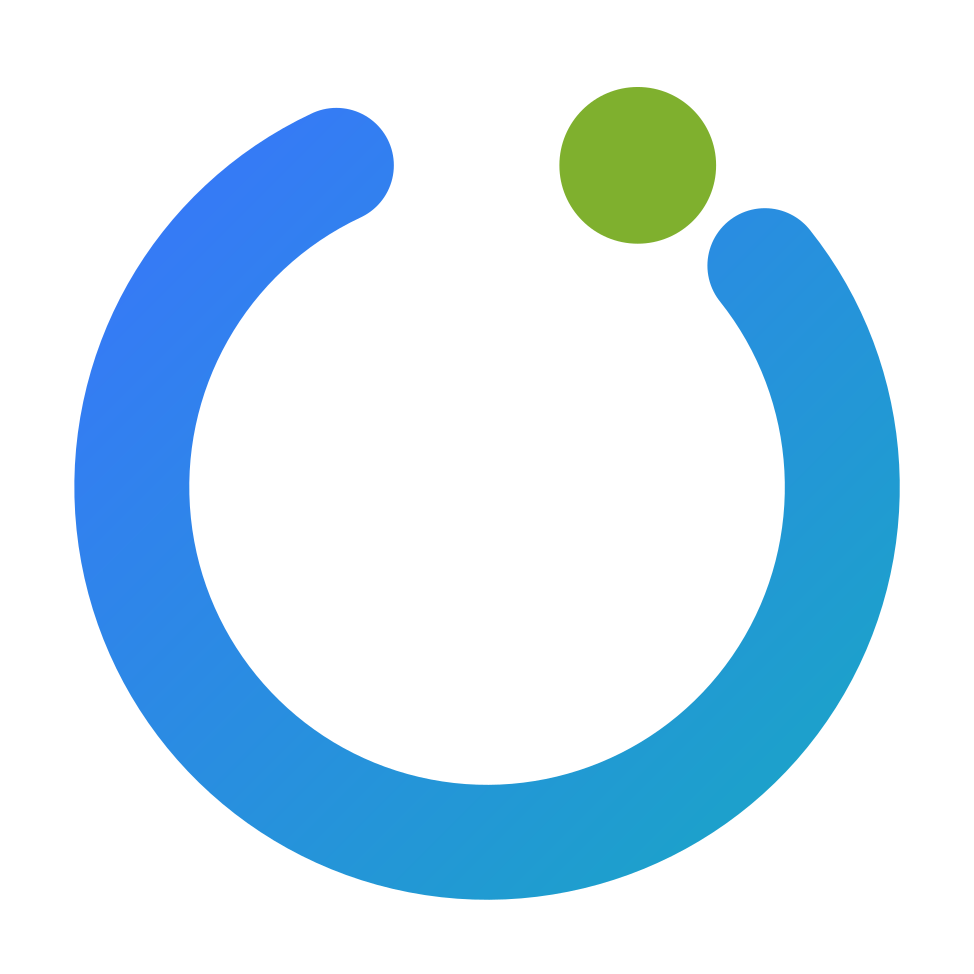
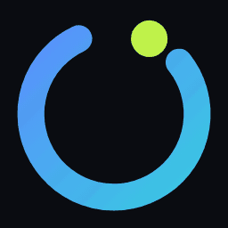

Movimiento oficial del logo: la órbita gira a 4,4 s por vuelta (lineal), el nodo respira y las «zz» saltan con resorte y 0,17 s de desfase. Solo en intros, loaders y cierres; nunca en bucle dentro de una interfaz.
Se reproduce una vez (3 s) y termina en el logo maestro, en reposo. Úsalo al abrir la web, al inicio de un vídeo o de una presentación.

oryzz-logo-intro.svg
oryzz-logo-intro_sobre-claro.svgVersión en bucle para pantallas de espera, cierres de vídeo y stands. Respeta prefers-reduced-motion: si el usuario lo pide, se queda quieto.

oryzz-logo-animado.svg
oryzz-logo-animado_sobre-claro.svgPara estados de carga. Tamaño recomendado: 32–96 px. Nunca con el wordmark al lado.

oryzz-loader.svg
oryzz-loader_sobre-claro.svgEmail, WhatsApp, Notion, presentaciones. Fondo sólido incluido (el GIF no admite transparencia suave).

oryzz-loader_sobre-oscuro_256.gifCurvas de tokens.json → motion.
| Elemento | Bucle | Intro |
|---|---|---|
| Órbita + nodo | rotate 360° · 4,4 s · linear · infinito | −150° → 0° · 1,5 s · ease-marca |
| Trazo | — | se dibuja en 1,25 s · ease-marca |
| Nodo | escala 1 → 0,80 → 1 · 4,4 s · ease-in-out | aparece 0,95 s con resorte · respira una vez |
| «ory» | — | entra desde la izquierda · 0,5–1,2 s |
| «z» «z» | salto 0,26 em · 1,95 s · resorte · desfase 0,17 s | caen y rebotan · 1,1 s · desfase 0,17 s |
| Resorte | cubic-bezier(.34, 1.4, .5, 1) · ease-marca cubic-bezier(.2, .8, .2, 1) | |
Como imagen: la animación CSS funciona dentro de <img>. Para repetir la intro, vuelve a asignar el src.
<img src="/brand/oryzz-logo-intro.svg" alt="Oryzz" width="280" height="95"> <!-- loader --> <img src="/brand/oryzz-loader.svg" alt="Cargando" width="48" height="48">